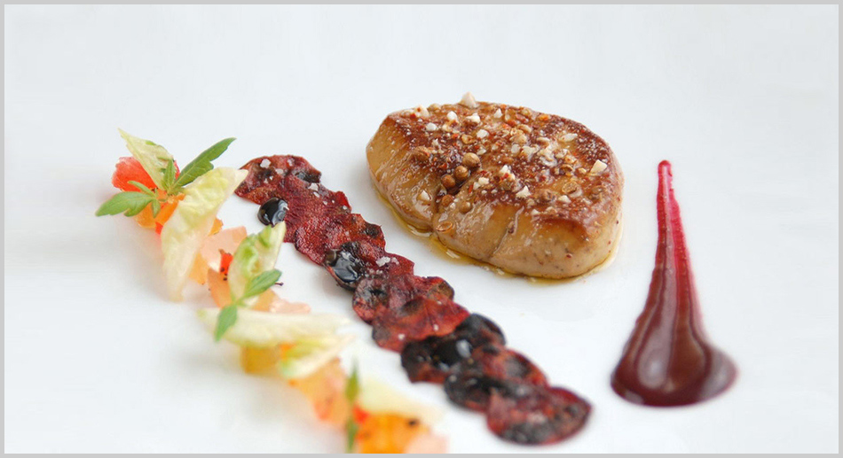

2009 "Visual Collection"
- 

Los distintos "stages" efectuados en años anteriores marcan el camino a recorrer. Nuevas culturas, nuevas técnicas, nuevos productos me abren un camino y un abanico de posibles elaboraciones.Adaptación de distintos estilos para crear uno propio.
En este año la cocción de las elaboraciones varian segun el producto adaptando cocciones típicas de productos cárnicos a pescados (confitados), desde la cocción al vacío hasta la no cocción (maceración).
las Verduras y las Legumbres toman un protagonismo fundamental en los platos, no como mera guarnición, sino como una integración total en el concepto de receta, tanto que muchas veces son más importantes los actores secundarios que el protagonista principal.
Recetas como la del "Rodaballo asado en crosta de Hierbas frescas. Setas y Gnocchis de Patata. Crema ligera de Zanahoria" explican que las "partes" hacen la suma de un "todo"
Deconstrucciones, adaptaciones y combinaciones se manifiestan con la misma intensidad en todos los platos. Los guiños a la cocina oriental son permanentes, sin olvidar por supuesto el alma y el gen de lo adquirido y aprendido a través de los años.